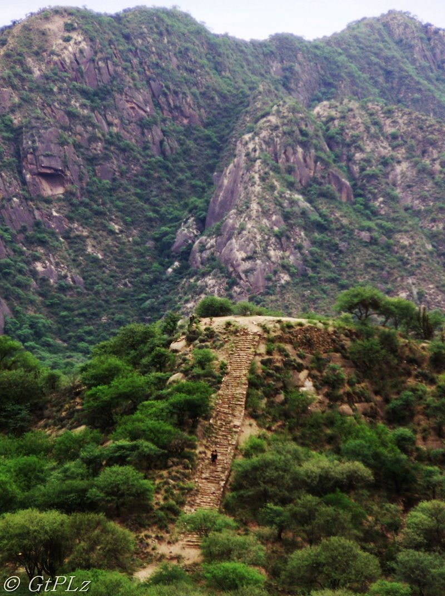

Londres
Londres, en Argentina, es una localidad turística de la provincia de Catamarca, en el departamento Belén, a la vera de la Ruta Nacional 40 y al pie de las sierras del Shincal, a 1.558 m s. n. m., en cercanías del río Quinmivil. Fue la primera localidad fundada por españoles en Catamarca y la segunda en el actual territorio argentino, luego de Santiago del Estero. Se encuentra a 281 km de la capital provincial (pasando por Aimogasta, provincia de La Rioja).
